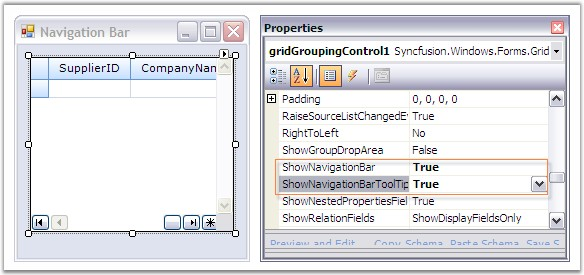
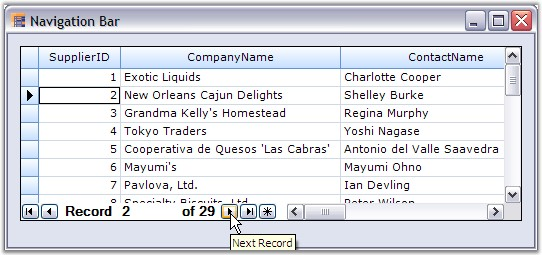

Grid Grouping control comes with an in-built Navigation Control that allows the user to browse through the records with ease. The navigation bar consists of buttons that facilitate navigation to first, next, previous, last records and also to the AddNew record in the grid. It also contains a label that displays the current record number together with the total record count.
NavigationBar can be enabled by setting ShowNavigationBar to true. It is possible to customize the default appearance of the navigation bar by setting the appropriate properties. Tooltips can be enabled for the navigation bar by setting the property, ShowNavigationBarToolTips to true. ShowNavigationBar must be set to true to enable tooltips.
|
Grid Grouping Control Property |
Description |
|
ShowNavigationBar |
Specifies whether to show the record navigation bar. |
|
ShowNavigationBarToolTips |
Specifies whether to show tooltips when the user hovers the mouse over the elements of the RecordNavigationBar. |
The following code examples illustrate the above settings.
1. Using C#
|
[C#]
this.gridGroupingControl1.ShowNavigationBar = true; this.gridGroupingControl1.ShowNavigationBarToolTips = true; |
2. Using VB.NET
|
[VB.NET]
Private Me.gridGroupingControl1.ShowNavigationBar = True Private Me.gridGroupingControl1.ShowNavigationBarToolTips = True |
Through Designer

Figure 404: ShowNavigationBar = "True" and ShowNavigationBarToolTips = "True"
Output

Figure 405: Navigation Bar and Navigation Bar ToolTip enabled for the Grid Grouping Control